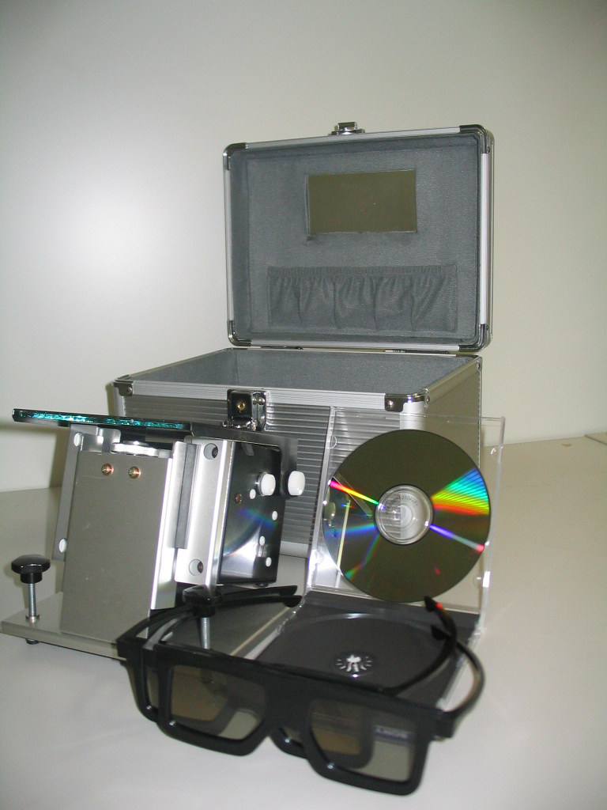
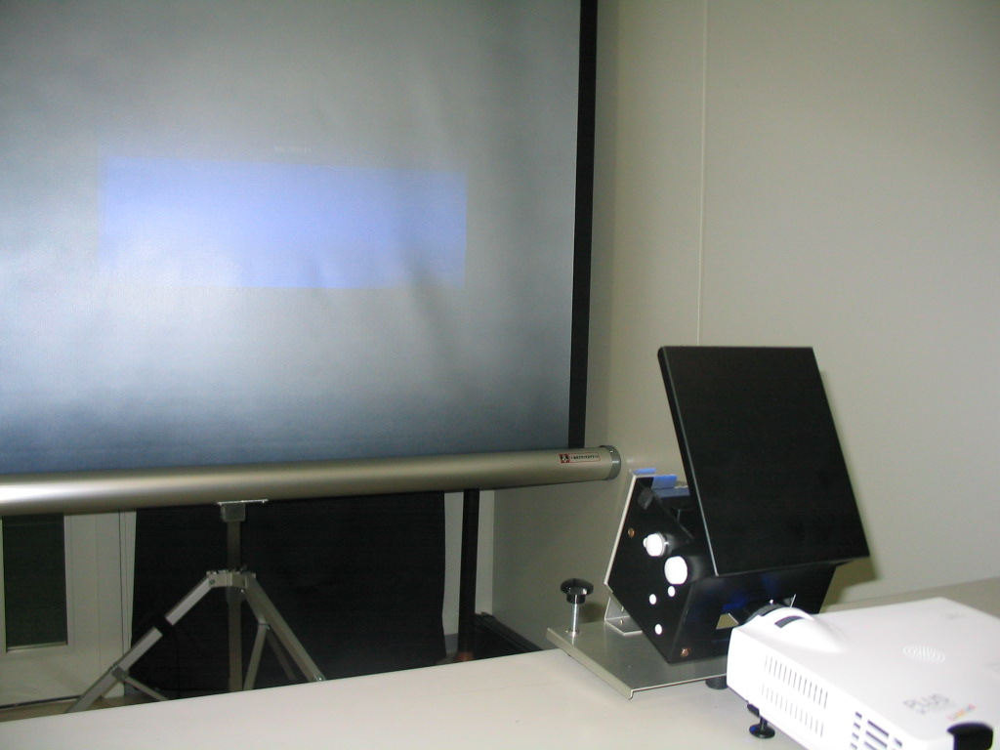
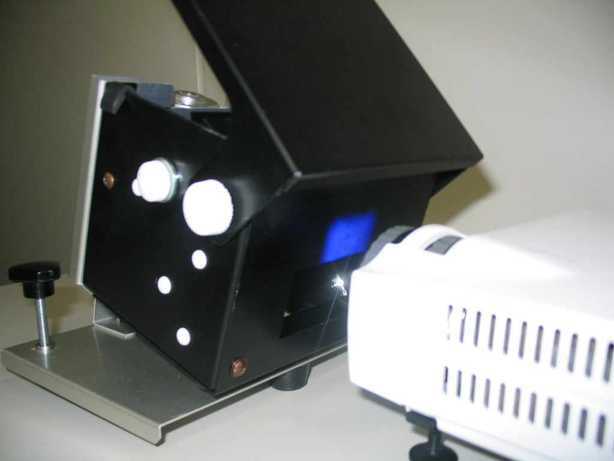
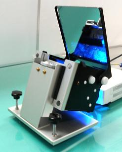

その他の製品 Products Except RCM
その他の製品情報 - 目次
簡易バーチャルリアリティー装置
バーチャルリアリティを実演する時に、もう PC、プロジェクタが専用のものである必要はありません。
つまり、PC、プロジェクタを郵送する必要はありません。
この AVR とシルバースクリーンがあれば、日常使っている自分の PC、会議室・講演会場にあるプロジェクタを使って、そのまま立体視が可能になります。
主要商品 ： Adapter VR AVR-01



